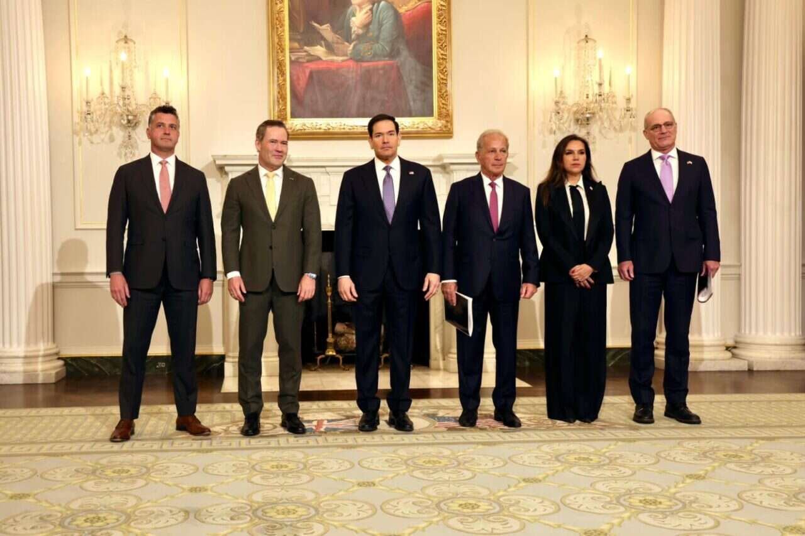

WIREDנמוכה09.05.2026, 00:00
OpenAI’s president wrapped his testimony on Tuesday by revealing a fiery meeting with Musk in 2017 and subsequent efforts to remove several board members.
אימות 1
OpenAI’s president wrapped his testimony on Tuesday by revealing a fiery meeting with Musk in 2017 and subsequent efforts to remove several board members.

Messages between Shivon Zilis and Tesla executives reveal plans in 2017 to start a rival AI lab, potentially led by Altman or Demis Hassabis.
סמסונג חצתה שווי של טריליון דולר והפכה לחברה השנייה באסיה שעושה זאת, על רקע הזינוק במניות השבבים והביקוש ל-AI. המהלך נתמך בהכנסות שיא וברווח תפעולי שקפץ ברבעון הראשון, כשברקע גם דיווח על מגעים עם אפל לייצור שבבים.

כך סטודנטים ובוגרים טריים מצליחים לדלג על המסלול המסורתי ולהיכנס ישירות לתפקידים מרכזיים.

Inworld הציגה את Realtime TTS-2, מודל טקסט-לדיבור שדורג ראשון ב-Artificial Analysis לפני OpenAI, Gemini ו-ElevenLabs.
הפוסט מרכז כמה פקודות שימושיות בקודקס: `/goal` להפעלת עבודה רציפה עד להשלמת יעד מוגדר, `/side` לפתיחת שיחה צדדית באותו הקשר, `/fast` להאצה של העבודה במחיר צריכת טוקנים גבוהה יותר, ו-`/compact` לדחיסת ההקשר כדי לחסוך בטוקנים. בנוסף נטען שאפשר לבקש מקודקס לבצע משימות במועד עתידי.

OpenAI העלתה בקוד פתוח את Privacy Filter, כלי שמזהה ומסיר מטקסט פרטים אישיים כמו שמות, מיילים, טלפונים, סיסמאות ופרטי בנק לפני שליחתו למערכות AI. הכלי פועל מקומית וניתן לכוונן את רמת הרגישות, כדי לצמצם סיכון לדליפת מידע בלי למחוק יותר מדי תוכן.

תוסף חדש ל-VSCode מבוסס n8n מאפשר להקים במהירות אוטומציות שמחברות בין סוכני AI, פעולות וכלים, וגם ממיר workflows לקבצים קריאים למודלי שפה.

יוצר התוכן מציג ניסוי יצירתי עם כלי AI כמו GPT-Image-2 ו-Claude Design, כולל אפקט אינטראקטיבי שבו וידאו שנוצר ב-AI נחשף במעבר עכבר על התמונה.

בכל סשן של Claude Code נטען קובץ `CLAUDE.md`, כך שההנחיות שבו משפיעות ישירות על אופן העבודה של המודל.

מודל Mythos של Anthropic איתר בתוך חודש 271 חולשות אבטחה ב-Firefox, יותר ממה שמפתחי הדפדפן מצאו במשך כשנה וחצי, כולל באגים שאפשרו יציאה מארגז החול. בשילוב חולשות נוספות, חלקם היו עלולים לאפשר הדבקה בנוזקה דרך לחיצה על קישור בלבד, מה שממחיש את ההשפעה הגוברת של מודלי AI על תחום הסייבר.

OpenAI הוסיפה לקודקס "חיות מחמד" מונפשות שמופיעות מעל כל האפליקציות ומציגות בזמן אמת מה קורה עם הסוכנים. אפשר לבחור אחת משמונה דמויות מוכנות או ליצור דמות מותאמת עם `/hatch`, ואז להפעיל אותה דרך הגדרות `Appearance`; יש גם אתר קהילתי לשיתוף והתקנה של דמויות שיצרו משתמשים.

הכלי `book-to-skill` ממיר קובצי PDF ו-EPUB ל"סקילים" עבור Claude Code, עם חילוץ תוכן, סיכומי פרקים ומילון מונחים.

אנתרופיק כנראה נערכת להשיק עוזר פרואקטיבי בשם הקוד "אורביט", שיסרוק בלילה שיחות ואפליקציות ויגיש בבוקר סיכומים, תובנות והצעות לפעולה.

הכותב מספר כיצד שילב את קלוד אופוס 4.7 עם מודל התמונות החדש של GPT כדי ליצור בקלות קרוסלה לאינסטגרם על סיפורה של הופ, צ׳יטה מהמדבריום בבאר שבע שעברה התעללות באירלנד וכיום מטופלת בישראל.

בוטוקס, איפור ומה לא. מסכן הנסיך הניגרי הוא מאבד כל עוקץ אפשרי הפרומפט שהשתמשתי בו: Create a hairstyle analysis graphic using this portrait.
OpenAI הוסיפה ל-ChatGPT אפשרות להגדיר איש קשר לשעת חירום, שיקבל התרעה לבדוק את מצב המשתמש אם המערכת תזהה כוונה לפגיעה עצמית. לפי התיאור, לא יועברו אליו פרטי שיחה אלא רק בקשת בדיקה.

ר, הוא לא אומר את דעתו והוא בטח לא המילה האחרונה או מקור אמין במאה אחוז. הוא בסך הכל מודל סטטיסטי שמנחש מה הכי מסתבר שתהיה המילה הבאה, וככה הוא עובר מילה מילה (טוקן-טוקן) ובונה לכם תשובה. אז למה שבע?

Coinbase מפטרת 14% מהעובדים, על רקע מה שהמנכ"ל מתאר כזינוק חד ביעילות בזכות AI: משימות שפעם ארכו שבועות מבוצעות בתוך ימים, יותר תהליכים עוברים אוטומציה וגם צוותים לא טכניים מעלים קוד לפרודקשן.

הכירו את Sci-Bot, כלי חיוני לכל סטודנט — עוזר בינה מלאכותית (AI) מדעי המבוסס על הארכיון הגדול בעולם של 85 מיליון מחקרים. 🔹 הוא עונה על כל שאלה מדעית, מצטט עבודות ומספק

מזכיר שהערוץ פתוח לפרסום ממומן, כל עוד זה נותן ערך לעוקבים וקשור לעולמות הטכנולוגיה וה-AI. אם זה רלוונטי לכם ואתם רוצים לשמוע פרטים, מוזמנים לכתוב לי בפרטי ✍️

הפוסט מציג טענת "חינם", אבל בלי אימות ברור מול המוצר הרשמי, ולכן צריך לראות בזה טענה שדורשת בדיקה.

הפוסט מציג טענת "חינם", אבל בלי אימות ברור מול המוצר הרשמי, ולכן צריך לראות בזה טענה שדורשת בדיקה.

הפוסט מציג טענת "חינם", אבל בלי אימות ברור מול המוצר הרשמי, ולכן צריך לראות בזה טענה שדורשת בדיקה.

שיאומי פתחה את MiMo V2.5 בקוד פתוח בשתי גרסאות, Pro ורגילה, עם חלון הקשר של מיליון טוקנים; דגם ה-310B הוא גם מולטי-מודאלי, מה שמרחיב את השימושים למפתחים וליישומי AI מורכבים יותר.

הניסוח המקורי בטוח מדי. הניסוח הזהיר יותר הוא: טראמפ אמר שהוא ממתין עוד הלילה לתשובה רשמית מאיראן על ההצעה האמריקנית, והזהיר שאם לא יושג הסכם מלא ארה"ב עשויה לחדש את "פרויקט חירות" בגרסה מורחבת.
הניסוח הזהיר יותר הוא: ארה״ב הודיעה על שני ימי שיחות מרוכזות בין ישראל ללבנון ב-14 וב-15 במאי, בהמשך למגעים מסוף אפריל, בניסיון לקדם הסכם שלום וביטחון רחב.
הניסוח הזהיר יותר הוא: טראמפ הודיע על הפסקת אש של שלושה ימים בין רוסיה לאוקראינה, עד 11 במאי, שתלווה גם בחילופי שבויים של 1,000 תמורת 1,000 ותסמן הישג ראשון לתיווך האמריקני אחרי חודשים ללא התקדמות.

הניסוח הזהיר יותר הוא: ארה״ב תארח ב-14 וב-15 במאי סבב שיחות נוסף בין ישראל ללבנון, בהמשך למפגש באפריל, על רקע המתיחות מול חיזבאללה.

הניסוח הזהיר יותר הוא: ארה"ב תארח ב-14–15 במאי סבב שיחות נוסף בין ישראל ללבנון, בהמשך למפגש מאפריל, עם דיונים על תיחום גבולות, שיקום לבנון וסיוע הומניטרי.

The firm reported revenues of $34 million, 60% of which are now attributed to its expansion into AI HPC. “The first quarter of 2026 was defined by execution,” said TeraWulf CEO and Chairman Paul Prager, in a statement.
The Senate Democrat said Meta’s reported plans to partner with a third-party stablecoin issuer could undermine “competition, privacy… and financial stability.”

London, United Kingdom, 8th May 2026, Chainwire
הפוסט מציג טענת "חינם", אבל בלי אימות ברור מול המוצר הרשמי, ולכן צריך לראות בזה טענה שדורשת בדיקה.

Two papers published this week have reignited debates about the risk posed by “Q-day” to the cryptography that underpins digital assets.

עדכון קצר סביב הצהובים ניסו לשים בצד את פרשת רוני דיילה ורשמו 0:4 קליל על הפועל פ"ת. קני מילר עמד על הקווים: "היו 48 שעות קשות". רוי רביבו: "כשמאמן עוזב זה לא נעים, אבל המשכנו קדימה".

עדכון קצר סביב ה-1:2 הדרמטי על הפועל פ"ת הוריד במעט את מפלס הלחץ בכרמל, אך לא העלים את התחושות הקשות בקרב הנהלת הקבוצה בשל הביקורת מצד הקהל: "כואב לראות שזה התודה למי שהשקיע כסף, זמן ואת
רן קוז`וך יחסר כמה שחקנים במשחק שיערך במושבה, אך גם יקבל בחזרה חלק, בין היתר מוחמד אבו רומי: